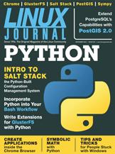

Shutdown Archive web server
Search:
Linux Journal
Issue #223/November 2012

Features
Python Scripts as a Replacement for Bash Utility Scripts
by Richard Delaney
Learn how to use Python and existing UNIX tools to improve your productivity in the shell.
Extending GlusterFS with Python
by Jeff Darcy
GlusterFS is a distributed filesystem with a strong emphasis on extensibility. Now extensions can be written in Python, bringing significant performance and other improvements within reach of even more programmers.
Getting Started with Salt Stack—the Other Configuration Management System Built with Python
by Ben Hosmer
Install and configure software on multiple servers at once.
Indepth
The Past, Present and Future of GIS: PostGIS 2.0 Is Here!
by Stefano Iacovella
Have the workhorse of GIS at your fingertips.
Columns
Reuven M. Lerner's At the Forge
Chrome Extensions
Dave Taylor's Work the Shell
SIGALRM Timers and Stdin Analysis
Kyle Rankin's Hack and /
What's Up Dock?
Shawn Powers' The Open-Source Classroom
People in Glass Houses Are Stuck with Windows
Doc Searls' EOF
Playing Value Subtraction Games
In Every Issue
Current_Issue.tar.gz
Letters
upFRONT
New Products
Archive Index
Shutdown Archive web server
Search:
Copyright © 1994 - 2018
Linux Journal
. All rights reserved.